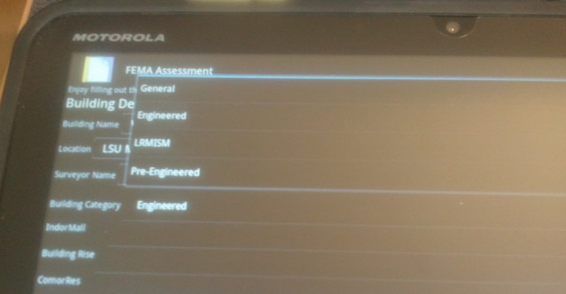
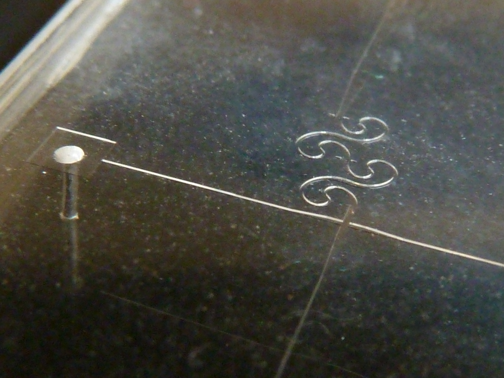

"I am always doing that which I cannot do, in order that I may learn how to do it."
Pablo Picasso
Throughout my time at LSU I have been fortunate to be an active member of four different research laboratories. Each of my advisers has provided me with crucial guidance in developing my skills as an effective researcher and scientist. As I have changed research groups over time due to an ever increasing understanding of my own research interests, each of the experiences have built upon each other in serendipitous ways.
Building Damage Assessment due to Natural Disasters (2011-2012)
Dr. Friedland's research group in Construction Management was full of chances to learn new skills. My main assignment throughout my time with Dr. Friedland was to start development of an application that could help digitize the collection of building assessment data. While I did not complete the application's integration with the assessment database I did learn the basics of programming for Android in Java and got a demo application.
Fabrication and Testing of Biomedical Microfluidic Devices
X-Ray and neutron tomography data visualization and processing, big data processing work flow development, X-Ray interferometer design and fabrication, and NSF I-Corps business development of quality analysis software
Through my work with Dr. Butler I have gotten multiple experiences to travel and meet with many professionals across the US and even internationally. Over spring break in 2014 myself and another undergraduate researcher flew to New York City to meet with collaborators at NYU Polytechnic in order to talk about the development of a software package VisTrails to be more customized for the research we were doing at LSU. In the fall of 2014 and spring of 2015 I was able to attend multiple conferences to present posters of my research or work flow development and equipment design. In June 2015 I went to Quebec City to present a poster at the International Conference on Materials Science and Tomography.
Page under development.
Throughout my time at LSU I have been involved in many extracurricular activities and held various leadership roles. They have given me an opportunity to be a part of and contribute to the rich and diverse community present at LSU.
This is the organization I am currently most active in. The Society of Peer Mentors (SPM) aims to give student leaders in the LSU College of Engineering a chance to develop their communication and leadership skills by being mentors for other engineering students as well as students in local K-12 programs. I participate frequently in education outreach events to local schools, where we do science and engineering demonstrations such as Snap Circuits, non-Newtonian fluids, magic putty, and marshmallow towers. These demonstrations are designed to create an interest in science through teaching basic scientific concepts in a fun, interactive way.
Personally, it has been a rewarding experience to see children and their parents come to the outreach events and learn new things. Sometimes the parents are just as curious as the children and the parents and their children do the activities together, which is always a heart-warming sight. There are also times when the child does not understand the activity, which has tested and expanded my ability to break down scientific concepts into the smallest and most basic parts. While I am used to explaining concepts to my peers, and even teenagers, doing outreach with elementary school students has certainly required me to learn new tools to better explain the demonstrations.
I lived on campus for my first two years at LSU, and both years I was very active in Residential Life. My first year I was part of the Residential Hall Association (RHA), where I acted as a Senator for my local community council. I got to organize events like a Fall Dance, Ice Cream Social, among other things to provide residents of the community opportunities to meet each other, relax, and generally have a good time. I talked to people in the community to find out what they wanted to do, as well as attending generally assemblies of community councils across campus to get an idea of what was working in other communities. Through RHA I also volunteered at with other Campus Life events such as Splatterbeat and Sneauxing in the South, which provided all students living on campus an opportunity for a free event.
My second year on campus I was hired as an Residential Assistant (RA) in the Laville Honors House, the same community I lived in the year before. As an RA I was a peer, mentor, friend, and policy enforcer for the residents living in the community, especially the 35 I was directly responsible for. As someone who was only a year older than most of the students, at first this was a challenging job; however, it was extremely rewarding to enable community building and see friendships grow between residents. My time as an RA also provided me with experience responding to emergencies like the building getting locked-down due to Hurricane Isaac, a campus evacuation due to a bomb-threat, and a basement flooding to name a few.
Section under revision.